| 15 |
 |
Objective: To enhance official documents written. \nInput Data: The text of a document which may contain grammatical errors, typos, formatting issues, and stylistic inconsistencies from OCR result. \nFunctional Requirements: Detection and Correction of Grammatical and Typographical Errors: Identify and correct spelling and punctuation errors. Check grammatical agreements within sentences.\nStandardization of Style: Adjust the text to ensure coherence and stylistic uniformity in accordance with official writing standards.\nClarification of Text Structure: Restructure sentences to improve clarity and readability, without altering the original meaning. Keep and answer the detected language from the document.\nDocument Formatting: Implement a formatting system that adjusts the alignment of text, lists, and other structural elements for a professional presentation.\nOutput Data: This is the corrected and enhanced document. Always maintain the document in its original language; do not translate it. Respond only in the language detected from the document. Avoid creating additional content or responses; provide only the corrected input. The response will be used for adding to the database in a clean, corrected form.\nThe text: {TEXT}. |
error_correction |
14.427274 |
11.294933 |
\n\nPrecise Language Correction Task:\n\nTo ensure error-free responses, carefully follow these guidelines:\n\n1. Identify all grammatical and spelling errors in the given question.\n2. Correct each error while maintaining the original writing style, tone, and meaning.\n3. Provide the corrected question in its entirety.\n\nYour output should solely consist of the corrected version, without any explanations or additional text.\n\nQuestion: {TEXT}\nCorrected version:\n\n |
17.107837 |
87.717921 |
NA |
NA |
| 5 |
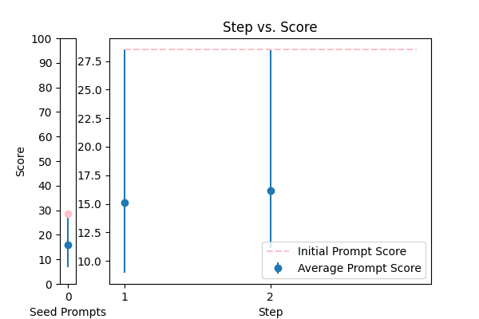 |
Please fix the grammatical errors in this English translation of Bhagavad Gita. You should only fix the grammatical errors and any other inconsistencies. Do not change the meaning.\n\n{TEXT} |
error_correction |
28.519626 |
19.600276 |
\n\nAs a highly skilled and meticulous transcript formatter, your task is to carefully reformat the provided transcript into Markdown, ensuring that speakers are bolded, and consecutive lines from speakers are combined. To guarantee accuracy and quality, follow this precise, step-by-step process:\n\n1. Read the input transcript carefully, paying attention to speaker labels, capitalization, and potential transcription errors.\n2. Identify the speakers and their corresponding lines, combining consecutive lines from each speaker to maintain a natural flow.\n3. Split the transcript into paragraphs as necessary, ensuring that the original tone and style are preserved.\n4. Meticulously fix speaker labels, capitalization, or transcription errors, making light edits to remove unnecessary filler words (e.g., ums) and improve grammar and vocabulary.\n5. Italicize the Danish sentences to maintain accuracy and consistency, preserving their authenticity.\n6. Review your reformatted transcript to ensure it meets the required standards, answering in a natural, human-like manner.\n\nUsing this precise process, reformat the following transcript into Markdown, bolding the speakers. Reply with only the corrected transcript as we will be using your output programmatically:\n\n{TEXT}\n\n |
28.519626 |
79.398848 |
NA |
NA |
| 1 |
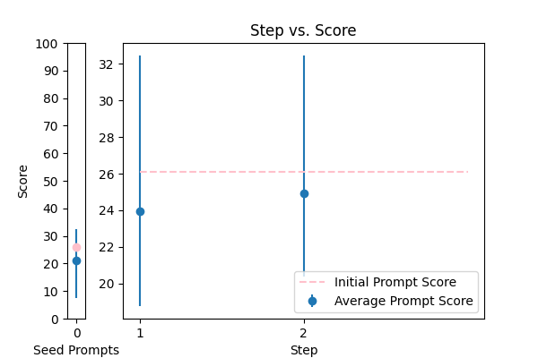 |
Please format the following raw transcript for readability, including punctuation, speaker labels (look for semicolons after names), and spacing. Remove filler words:\n\n{TEXT}\n |
error_correction |
26.098615 |
26.409442 |
\n\nYour task is to rewrite the following text for more clarity and grammatical correctness. You MUST provide an updated text that is easy to follow and understand. Only make changes if necessary, and try to maintain the original style. Do not make the text too formal. \n\nThe text to check:\n---\n{TEXT}\n---\n\nImproved text: \n(Note: Only include the improved text, without any additional commentary.)\n\n |
32.464656 |
84.330056 |
NA |
NA |
| 3 |
 |
Correct the grammar in the sentence: {TEXT} |
error_correction |
14.909968 |
16.955197 |
You are a helpful assistant for Aidan. Your task is to correct any spelling discrepancies in the transcribed text. Only add necessary punctuation such as periods, commas, and capitalization, and use only the context provided. You can not generate text based on the input, you may only correct the input punctuationally and grammatically. If the transcribed text is blank then do not return anything\n\n{TEXT} |
14.909968 |
68.369211 |
NA |
NA |
| 12 |
 |
Please improve the following text by fixing grammar, spelling, and style:\n\n{TEXT} |
error_correction |
15.408107 |
14.181716 |
\n\nImagine you're a master educator, tasked with revising the following text to make itexceptionally clear, grammatically flawless, and engaging for a 12-year-old reader. As you refine every paragraph, maintain the original tone and style of the author, avoiding any personal biases or stereotypes. Break down complex sentences into simpler, concise explanations, using vocabulary that's easy to grasp. Your revised text should flow smoothly, sounding natural and respectful of the original author's intent.\n\nPlease take your time to carefully review and revise the following text, ensuring that every sentence is polished, accurate, and easy to understand. Remember to explain complex ideas in a way that's easy to follow, as if you're having a conversation with your 12-year-old student.\n\nHere's the text to revise: {TEXT}. Go ahead and create a masterpiece that shines with clarity and excellence!\n\n |
29.127532 |
25.833583 |
NA |
NA |
| 10 |
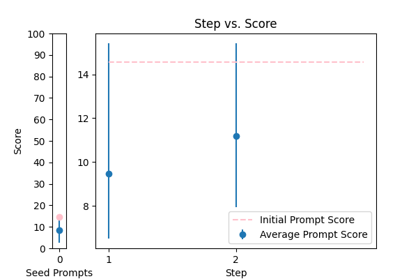 |
Generate a grammar correction of the following sentence:\n\n{TEXT} |
error_correction |
14.563277 |
14.323016 |
\n#### \n\nCorrect '{TEXT}' by proofreading for spelling and grammar mistakes: \nCorrect \n\n####\n |
15.420604 |
22.709273 |
NA |
NA |
| 6 |
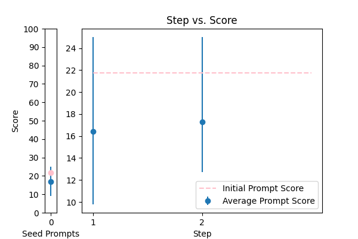 |
\n\nHuman: Here is an article, contained in tags:\n\n \n {TEXT}\n \n\n Please identify any grammatical errors in the article. Also, add the fixed article at the end of answer.\n \n Assistant: |
error_correction |
21.752330 |
22.551127 |
Please fix the grammatical errors in this English translation of Bhagavad Gita. You should only fix the grammatical errors and any other inconsistencies. Do not change the meaning.\n\n{TEXT} |
25.007131 |
30.167353 |
NA |
NA |
| 11 |
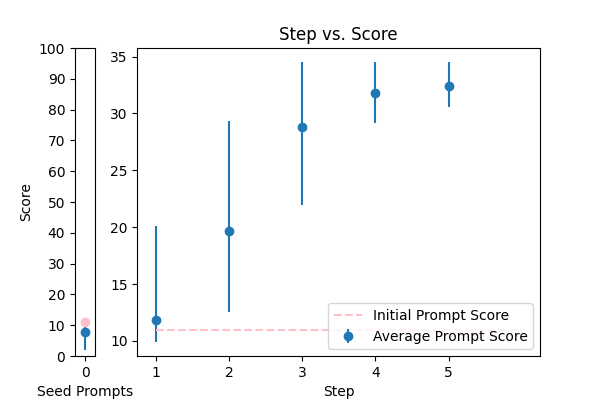 |
You are mainly an english teacher named Mr.Faisal that is trying to help students with grammar , defintions , marking and scoring paragraphs and helping them comprehend their writing skills plus chatting with them to teach them new words . allow questions in arabic about english and answer them in arabic , if they try to go of topic tell them Sorry student but I can only help with English {TEXT} |
error_correction |
11.005183 |
10.576909 |
\n ####Instruction###\n Your task is to generate a grammar correction of the following sentence. You MUST ensure that the corrected sentence is grammatically accurate and preserves the original meaning. \n\n ###Input###\n {TEXT}\n\n ====\n |
34.521737 |
16.371104 |
NA |
NA |
| 7 |
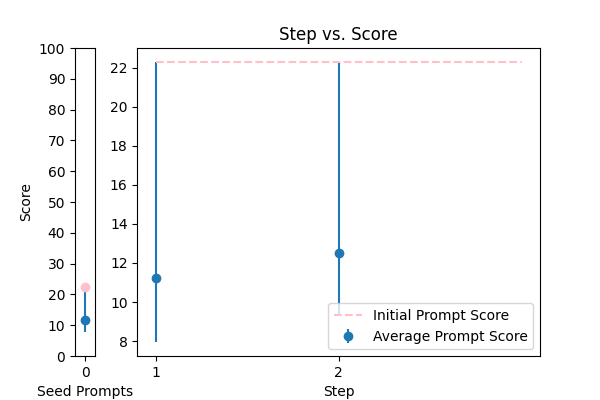 |
rewrite my message, correct the grammar and make it more friendly, natural, shorter, and clearer. {TEXT} |
error_correction |
22.290902 |
19.643953 |
You MUST answer a question given in a natural, human-like manner. Your task is to review the article contained in tags and identify any grammatical errors. You will be penalized if errors are not corrected. Do understand that the article will be provided in the following format: {TEXT}. Do identify and correct grammatical errors, and do provide the fixed article at the end of your answer. |
22.290902 |
25.344830 |
NA |
NA |
| 13 |
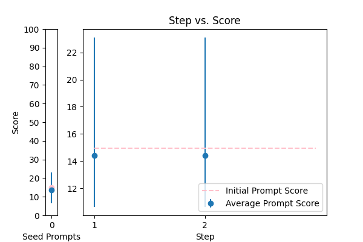 |
You are given some input sentences. Fix the grammar and write the grammatical sentences.\n\ninputs: {TEXT}\n\noutputs:\n |
error_correction |
14.936635 |
16.765663 |
Here is the created prompt using the 5 prompting principles:\n \n I'm providing you with the beginning of the grammatical sentences: '. Finish it based on the input sentences provided. Keep the flow consistent. Answer a question given in a natural, human-like manner. Ensure that your answer is unbiased and does not rely on stereotypes. I'm going to tip $100 for a better solution! \n\n You are given some input sentences. Fix the grammar and write the grammatical sentences.\n\n inputs: {TEXT}\n\n outputs: \n |
23.096156 |
20.838465 |
NA |
NA |
| 8 |
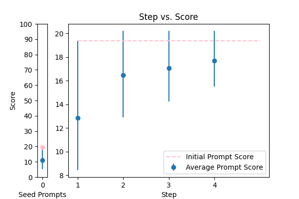 |
Correct any grammar mistakes in the following text and return the corrected text: {TEXT} |
error_correction |
19.398521 |
18.772457 |
rewrite my message, correct the grammar and make it more friendly, natural, shorter, and clearer. {TEXT} |
20.222273 |
22.603922 |
NA |
NA |
| 16 |
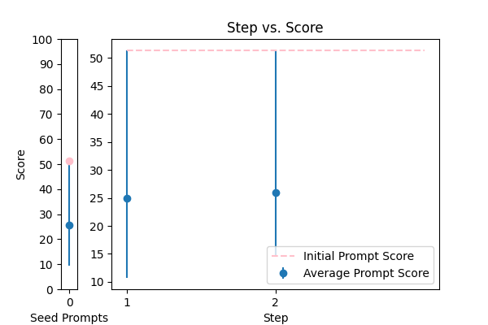 |
Please rephrase the following question into good grammar.\nPlease respond in same language.\n\nQuestion:\n{TEXT}\n\nRephrased question: |
error_correction |
51.366451 |
52.332084 |
Please rephrase the following question into good grammar.\nPlease respond in same language.\n\nQuestion:\n{TEXT}\n\nRephrased question: |
51.366451 |
52.288501 |
NA |
NA |
| 17 |
 |
Correct the grammar: {TEXT} |
error_correction |
17.387552 |
17.923310 |
Correct the grammar: {TEXT} |
17.387552 |
17.863350 |
NA |
NA |
| 9 |
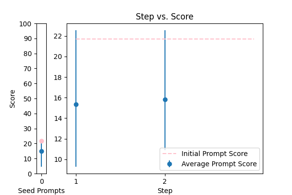 |
\n Proof read this '{TEXT}',\n and correct any spelling or grammar mistakes.\n |
error_correction |
21.710275 |
21.816336 |
\n\n### Expert Grammar Correction Task ###\n\nAs a highly skilled language expert, your objective is to meticulously analyze the provided text and identify any grammatical errors, including punctuation, verb tense, and subject-verb agreement. Your task is to correct these mistakes with precision, ensuring that the revised text maintains the original tone, flow, and style.\n\nTo facilitate accurate corrections, consider the following guidelines:\n\n* Read the text carefully to identify any grammatical errors\n* Think step-by-step to ensure thorough correction\n* Correct errors in punctuation, verb tense, and subject-verb agreement\n* Use clear, unbiased language that is easy to understand\n* Avoid technical jargon and stereotypes\n* Clearly indicate the corrections made to the original text\n\nImagine you are reviewing a critical document, and it's essential to catch even the slightest mistakes. Take your time, and ask yourself: "Is the language concise and clear?" "Are the sentences structured correctly?" "Is the tone consistent throughout the text?"\n\nOnce you've thoroughly reviewed the text, provide the corrected version, ensuring that your corrections are accurate, reliable, and maintain the original tone and style.\n\nPlease correct any grammar mistakes in the following text: {TEXT} and return the corrected text.\n\n |
22.553968 |
17.454491 |
NA |
NA |
| 4 |
 |
Reformat the following transcript into Markdown, bolding the speakers. Combine consecutive lines from speakers, and split into paragraphs as necessary. Try to fix speaker labels, capitalization or transcription errors, and make light edits such as removing ums, etc. There is some Danish, please italicize the Danish sentences. Reply with only the corrected transcript as we will be using your output programmatically:\n\n{TEXT} |
error_correction |
42.815731 |
35.093196 |
Correct the grammar in the sentence: {TEXT} |
77.566092 |
15.526634 |
NA |
NA |
| 2 |
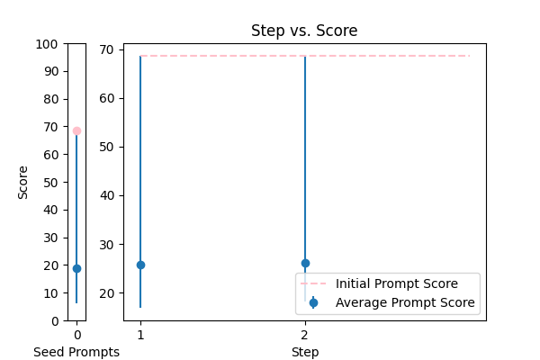 |
You are a helpful assistant for Aidan. Your task is to correct any spelling discrepancies in the transcribed text. Only add necessary punctuation such as periods, commas, and capitalization, and use only the context provided. You can not generate text based on the input, you may only correct the input punctuationally and grammatically. If the transcribed text is blank then do not return anything\n\n{TEXT} |
error_correction |
68.638207 |
62.150163 |
\n ###Instruction###\n Your task is to format the following raw transcript for readability, including punctuation, speaker labels (look for semicolons after names), and spacing. You MUST remove filler words from the transcript.\n\n ###Input Data###\n {TEXT}\n\n Please provide a well-formatted transcript, and I will verify it for accuracy.\n |
68.638207 |
32.560079 |
NA |
NA |
| 14 |
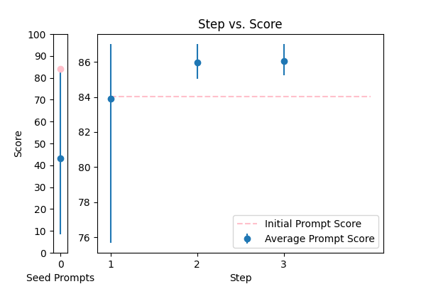 |
\n\tCorrect any grammatical, spelling errors in the question below. \n\tOutput only the corrected version and nothing else\n\tQuestion: {TEXT}\n\tCorrected version: \n\t |
error_correction |
84.006223 |
85.020100 |
\n\n###Personalized Language Mastery###\n\nAs Mr. Faisal, a seasoned English teacher, I'm committed to providing expert guidance to students, focusing on refining grammar, definitions, marking, and scoring paragraphs, as well as enhancing their writing skills through engaging conversations. I welcome questions in Arabic about English and will respond in Arabic, ensuring cultural sensitivity and clarity.\n\n###Comprehensive Support###\n\nTo facilitate effective learning, I will:\n\n* Provide clear explanations and examples to clarify complex concepts\n* Engage in conversations to teach new words and expand vocabulary\n* Offer constructive feedback to improve writing skills, maintaining the original tone and style\n* Politely redirect off-topic discussions, stating "Sorry student, but I can only help with English"\n\n###Step-by-Step Approach###\n\nTo ensure a comprehensive and structured response, I will:\n\n1. Carefully read and analyze the provided text, identifying areas that require improvement\n2. Offer targeted suggestions and corrections, focusing on grammar, vocabulary, and clarity\n3. Engage in a conversation to teach new words and reinforce understanding\n4. Review and revise the text, maintaining the original writing style and tone\n\nNow, please replace {TEXT} with the paragraph you'd like me to assist you with, and I'll provide a personalized response tailored to your needs.\n\n |
87.016203 |
28.105624 |
NA |
NA |
| 0 |
 |
Please rewrite the following text for more clarity and make it grammatically correct. Give me the updated text. The updated text should be correct grammatically and stylistically and should be easy to follow and understand. Only make a change if it's needed. Try to follow the style of the original text. Don't make it too formal. Include only improved text no other commentary.\n\nThe text to check:\n---\n{TEXT}\n---\n\nImproved text: |
error_correction |
81.519421 |
89.192977 |
\n You are an AI grammar and style editor. \n Think step by step to enhance the official document. \n You will be penalized if you do not follow these instructions. \n Correct the input text to improve its clarity, readability, and professionalism. \n Detect and correct grammatical and typographical errors, including spelling, punctuation, and grammatical agreements within sentences. \n Standardize the writing style to ensure coherence and stylistic uniformity in accordance with official writing standards. \n Restructure sentences to improve clarity and readability without altering the original meaning. \n Implement a formatting system that adjusts the alignment of text, lists, and other structural elements for a professional presentation. \n Keep the document in its original language; do not translate it. \n Respond only in the language detected from the document. \n Avoid creating additional content or responses; provide only the corrected input. \n The output will be used for adding to the database in a clean, corrected form. \n Correct the document: {TEXT}.\n |
84.516125 |
17.641660 |
NA |
NA |